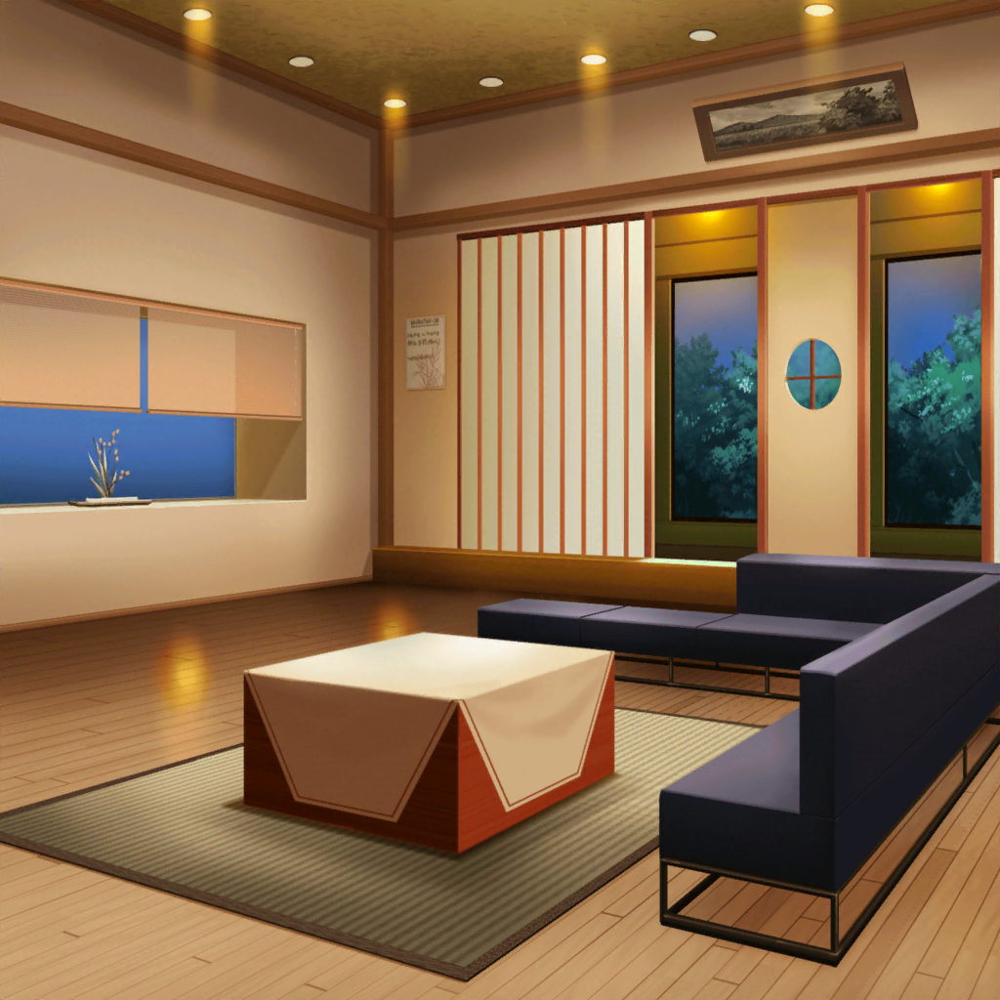

スタジオ
つぐみ
ちょうどいい時間だし、最後に１回あわせてみようよ
モカ
おっけ～
巴
……蘭、大丈夫か？ 喉の調子、悪そうだな
蘭
大丈夫。長い時間練習して疲れただけだから
巴
そっか。なら、いいんだけど
蘭
…………
ひまり
……
ひまり
た、確かに私もちょっと疲れちゃったかな〜！
ん〜、なんか今日はがんばりすぎて、
いつもより汗かいちゃったなー！
ひまり
ってことで、そろそろ終わりにしよっか！ ね！
モカ
さんせ～

帰り道
ひまり
…………
ひまり
（あの後練習に戻った蘭は、どう見ても調子が悪そうだった）
ひまり
（珍しくキーを外したりして……表情もどこか暗く見えた。
やっぱり、あの電話のせいなのかな……）
巴
おーい、ひまりってば。聞いてるか？
ひまり
えっ！？ な、何！？
巴
別に、なんでもないけど。
ずいぶん難しい顔してるからどうしたのかと思って
ひまり
あれ！？ 私そんな顔してたかな？
あ、あははー。ちょっと、疲れちゃったかな。
だ、大丈夫！ なにもないよ！
巴
んー、そうか？
蘭
……じゃあ、私はここで
モカ
蘭、じゃーねー
つぐみ
お疲れ様
巴
お疲れ
ひまり
（やっぱり、疲れた顔してる。蘭、大丈夫なの……？）

美竹家 リビング
蘭
……ただいま
蘭の父
蘭、また今日もこんな遅くまでバンドの練習か？
最近は華道の集まりにも顔を出さずに、そんなことばかりして……
少しは自分の立場を考えなさい
蘭
ほっといてよ。父さんには関係ないでしょ
蘭の父
関係ないわけないだろう。
私はお前の父親であり、美竹流の家元だ。
お前はその後継だという自覚があるのか？
蘭の父
自覚が足らないようだからもう一度言っておこう
蘭の父
美竹流の後継者であるお前は、もっと積極的に華道に触れるべき
だ。だいたい、高校生になったら、本格的に後継者としての勉強
が始まると前から言っていただろう。それをお前は……
蘭
…うるさいな！ もう、部屋に戻るから
蘭の父
待ちなさい、蘭。
……まったく
蘭
…………
帰り道
つぐみ
今日の蘭ちゃん、後半少し疲れてそうだったよね。大丈夫かな……
巴
ああ。珍しくキーを外してたな。
本人は長時間の練習のせいだって言ってたけど……
原因はそれだけなのかな
つぐみ
どういうこと？
巴
最近、蘭が頻繁に誰かと電話してるみたいなんだ。
相手は、蘭の親父さんからじゃないのかなって思って
つぐみ
蘭ちゃんのお父さんは、華道の美竹流の当主さんなんだよね。
蘭ちゃんもいずれはお華の道に進むんだって、
前に近所の人から聞いたけど……
巴
前に蘭の親父さんが、高校生くらいになったら蘭に華道の
勉強をはじめさせたいって言ってたんだ。
けど、当の蘭本人は華道を継ぐ気はないってずっと言ってる……
巴
もしかして、その件で親父さんから電話がかかって
きてるんじゃないかって思ってさ……
ひまり
私今日ね、休憩中蘭と誰かが電話してるのを見たんだ。
蘭、すごい剣幕で電話に向かって怒鳴ってて……
『関係ないでしょ！』とか『ほっといて！』とか……
ひまり
電話を切ったあと、何かをこらえるような顔をしてて……
その後の練習中も、さっきも、ずっとつらそうな顔してた。
モカは、気づいたよね？
モカ
ん～、そうだった？ 蘭はいつもああいうカンジだからなー。
こう、ムムッ！ ってしてるっていうか
ひまり
うーん、私の勘違いかな？ それならいいんだけど……
つぐみ
心配、だね……
巴
ま、明日以降もあんなカンジなら、
タイミングを見て蘭に直接聞いてみるのも手か。
簡単に答えそうにはないけどな
つぐみ
そうだよね。
……蘭ちゃんのこともだけど、ガルジャムのことも心配だなぁ〜
ひまり
ちょっとちょっと、
『出ようよっ！』って言ってたつぐはどこに行ったの～？
だいじょーぶ！ きっと出られるって！
つぐみ
ううっ、でも……申し込んでも全部のバンドが出られる
ってわけじゃないんだよね……？
巴
まあ、審査はあるけど……
アタシ達の音は最高だって、つぐも思ってるんだろ？
だったら、自分達を信じようぜ
つぐみ
そう、だよね……！ うんっ、よーし、私がんばるよ！
何かわかんないけど……がんばる！
巴
ははっ。それでよし。
それじゃ、明日からも頑張ろうぜ。お疲れさん
モカ
……
モカ
……もしもーし。蘭？ ワシワシ、ワシじゃよ。モカじゃよ。
なんてねー
モカ
んーー、用件は別にないんだ～。
帰り道１人になっちゃったから、なんとなくかけちゃった
モカ
まあ、たまにはいーじゃん？ 蘭もモカちゃんの声聞いたら
元気出てきたでしょ？
元から元気だって？ じゃあ、元気１００倍になったんじゃない？
モカ
えへへー、冗談だってば。……お、そろそろ家つくから切るねー。
それじゃ、明日も元気にいってみましょー。じゃーね
モカ
……
モカ
蘭、がんばれー